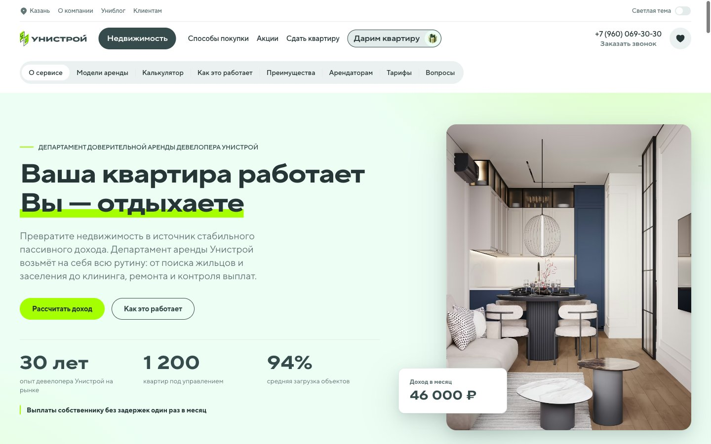

Живи с Унистрой · release_header · 06.10.2026
Итоговый QA перед передачей разработчикам
Статический интерфейс проверен и подготовлен к передаче. Запуск приёма заявок требует подключения обеих форм и проверки реального получения данных на целевом сервере.
+7 (960) 069-30-30
Постоянный номер во всех вариантах меню и в статическом резервном HTML. Подмену номера и коллтрекинг на этой странице не подключать.
12размеров и тем
74расчётных сценария
24функциональные проверки
95локальных ресурсов
Проверена рабочая версия поверх коммита 69594b67ea98499db56078e763358a89ff1ec738. Изменения локальные, публикация и push не выполнялись. SHA-256 итогового index.html: bd2934d78172afd52a777fb95b8fd68c70b099d38c79991e132ca05310591ddc. Полный состав версии: контрольные суммы файлов.
Что исправлено
- Во всех 34 шаблонах закреплён телефон аренды. Генератор сохраняет его при обновлении снимков головного сайта. Удалённые ранее цены и остатки не возвращаются.
- Основная форма больше не принимает 10 цифр вместо полного номера. Ошибки связаны с полями для вспомогательных технологий.
- При выборе посуточной модели форма передаёт её расчёт: 95 400 ₽ вместо ошибочных 39 600 ₽ при исходных параметрах. Для неопределённой модели расчётные поля равны null. Изменение калькулятора скрывает устаревшую подпись перенесённого расчёта.
- Обе формы блокируют повторную отправку, пока ожидают ответ. Ошибка сервера сохраняет введённые данные и позволяет повторить попытку.
- Чекбоксы обратного звонка доступны с клавиатуры. Настольное меню сохраняет фокус после открытия. Калькулятор поддерживает стрелки, Home и End; FAQ сообщает состояние и подстраивает открытый ответ при изменении ширины.
- Убраны переносы внутри слов заголовка формы. Изображению приложения заданы размеры и отложенная загрузка. CTA учитывают reduced motion.
Тексты основной страницы сохранены побуквенно после нормализации пробелов. Юридические PDF, владелец формы, блок арендаторов и финансовые коэффициенты не изменены. Изменения кода · Проверка данных и границ изменений.
Адаптив и меню
Проверены обе темы на 320, 390, 768, 1024, 1440 и 1920 px. Горизонтальное переполнение основного содержимого, недостающие изображения и неправильные телефонные ссылки не обнаружены. Проверены город, компания, блог, клиенты, покупка, проекты, квартиры, парковки, кладовые и обратный звонок; на мобильном дополнительно основной экран и возврат по уровням. 120 обязательных комбинаций состояний, дополнительные проверки записаны отдельно.
Журнал меню · Журнал адаптива · Поля формы на телефоне.
Сценарии и данные
Формы проверены на изолированном локальном сервере: успех 200, отказ 500 и медленный ответ. Использованы синтетические контакты; реальных отправок в CRM не было. В журнале медленного сценария ровно по одному запросу от каждой формы, реклама выключена. Первый запрос в журнале воспроизводит исходную ошибку и не считается успешным итоговым тестом.
Калькулятор: 3 модели × 4 типа квартиры × 2 варианта ремонта × 3 стоимости, дополнительно 2 границы занятости. Независимо проверены суммы, комиссия, округление, годовой денежный доход, рост стоимости, доходность и интерполяция окупаемости. 74 результата · Функциональные результаты · Локальные тестовые запросы.
Ссылки, ресурсы и загрузка
95 локальных ресурсов найдены; синтаксис JavaScript корректен, повторяющихся ID и битых внутренних якорей нет. Контрольные суммы трёх PDF совпадают с версиями в ссылках. В исходниках не обнаружены секреты по проверенным шаблонам; это не полноценный аудит безопасности. В хранилище браузера код сохраняет только тему.
61 адрес разделов головного сайта открыт в обычном браузере без страницы ошибки, в том числе все 7 способов покупки и 3 юридических адреса. При наличии ответа документа статус 200; часть переходов браузер выполнил без нового события документа. Прямые HTTP-проверки сайта получили 403, поэтому они не трактуются как битые ссылки. Внешние ссылки Telegram, VK и Rutube ответили HTTP 200. Ссылка Google работает технически, но не соответствует назначению карточки.
Контрольная загрузка без кеша: 14 ответов со статусом 200, около 1,71 МБ полученных данных, DOMContentLoaded около 45 мс на localhost. Ошибок загрузки и предупреждений/ошибок консоли не было. Эти цифры не характеризуют скорость на мобильной сети. Полноценные Lighthouse / Core Web Vitals на целевом сервере не измерялись. Для публикации включить сжатие и кеширование; изображения меню зависят от CDN головного сайта.
Статический аудит · Сеть и консоль · Прямые HTTP-проверки.
61 проверенный адрес головного сайта
Что остаётся перед запуском
Передать разработчикам можно. Включать сайт как работающий канал заявок пока рано: обе формы сейчас без принимающего API. На сайте нет технической заглушки и ложного сообщения об успешной отправке, но заявки никуда не доставляются.
Границы проверки
Среда: macOS, встроенный Chromium-браузер Codex, программное изменение ширины окна. Версия движка через доступный API не предоставляется. Реальные iPhone/Android, экранная клавиатура, VoiceOver, Safari и Firefox не проверялись. Это не сертификат WCAG и не юридическое заключение. Перед релизом нужен короткий прогон в этих браузерах и на физических устройствах.
Эквайринг, банковское согласование, реальная доставка сообщений, серверное хранение согласий и боевой HTTPS не проверялись. В локальном стенде страница работает в корне, на основном preview в подпапке /release_header/. Продукционный URL после выкладки требует отдельного smoke-теста.
Подтверждение номера и внешнего вида

Снимок локальной проверенной версии. Дополнительные снимки по размерам находятся в таблице выше. Отчёт и тестовый стенд входят только в материалы передачи разработчикам.